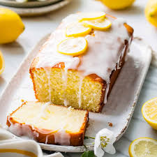

About the Recipe
Preparation Time: 15 mins
Cooking Time: 45 mins
Level of Difficulty: Easy
Number of Servings: 6
Ingredients
- 225g unsalted butter
- 180g caster sugar
- 4 eggs
- 225g self-raising flour
- 1 lemon, zested
- 2 lemons, juiced
- 65g caster sugar

Recipe for the Cake
- Pre-heat the oven to 180°C.
- Beat together the butter and caster sugar until creamy. Add the eggs one at a time, slowly mixing through.
- Sift in the self-raising flour, then add the lemon zest and mix until well combined.
- Line a loaf tin (8 x 21cm) with greaseproof paper, then pour in the mixture and level the top with a spoon.
- Bake for 45 to 50 minutes.
Recipe for the Lemon Drizzle
- Mix the lemon juice and caster sugar to make the drizzle.
- Prick the cake all over with a fork, then pour over the drizzle – Let the juice sink in. The sugar will form a sweet, crisp topping.
- Leave the cake in the tin until completely cool before serving.
Find More Recipes Online
Explore more recipes on the BBC Good Food website: https://www.bbcgoodfood.com/